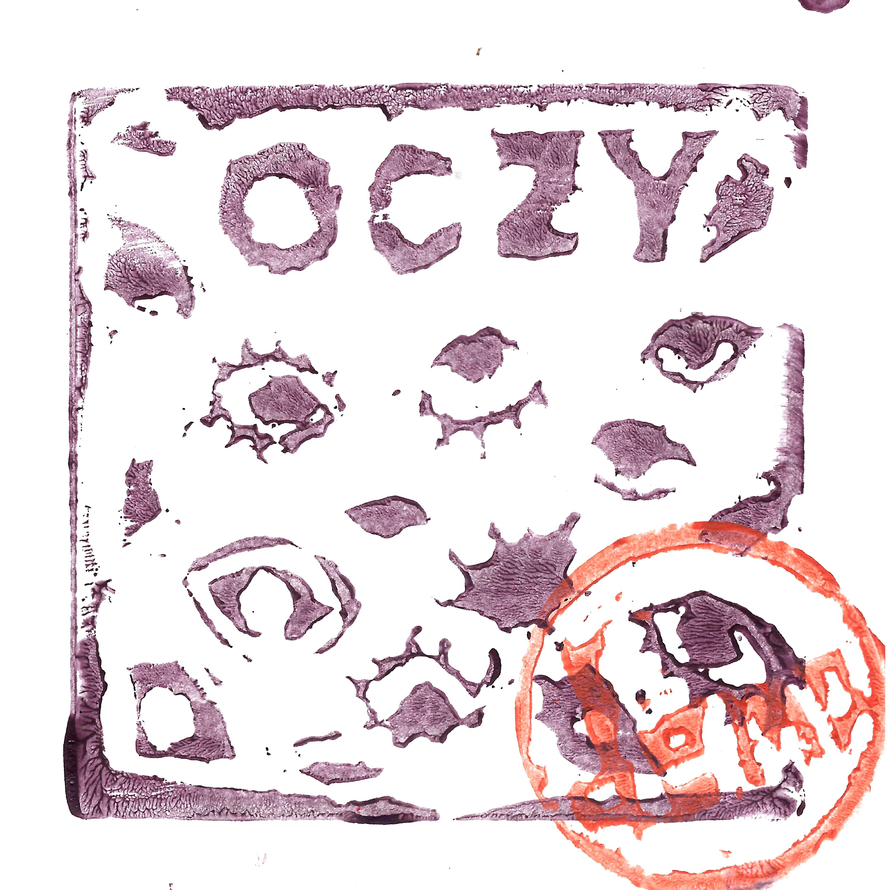

CD / 9 Utworów
Psycho/grungowo/punkowo/rabanowy zespół, warto sięgnąć po dużo bardziej dopracowaną EPkę.
Nagrano u Ali - wakacje 2022
1. Obłęd
2. Ślimak
3. Na siłę
4. Odklejony
5. Wybacz
6. Herbata
7. Jaki ojciec, taki syn
8. Cyfrowa pułapka
9. Nie jestem idealny
Piotrek - gitara, wokal
Kornel - gitara prowadząca
Piszczel - perkusja
Ala - bas
Michał Czapski - wydanie
Nana - grafika (każda płyta osobno "stemplowana")
Wydano - Wrzesień 2022
Demo niedostępne na CD.
Posłuchaj (odradzam heh) na Bandcamp.
Oczy / Close Call Records © 2022